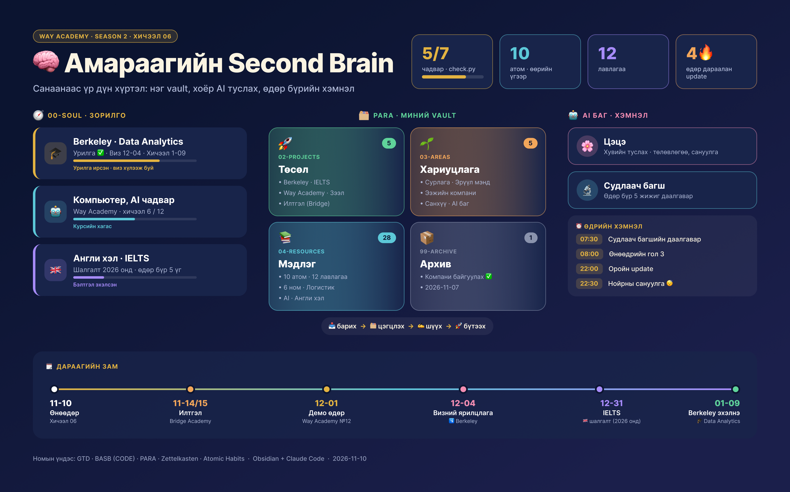

🧠 Амараагийн Second Brain
Obsidian + Claude Code дээр бүтээсэн хоёр дахь тархи: PARA бүтэц, GTD хэмнэл, өөрийн үгээр бичсэн атомууд, хоёр AI туслах.
🕸 Миний тархины зураг
Obsidian-ий graph шиг: цэг бүр нэг санаа, шугам бүр «яагаад» холбогдсон. Цэг дээр дарж дотор нь юу байгааг хар, чирж хөдөлгө.
👆 Цэг дээр дар · чир
🎬 Хэрхэн ажилладаг вэ
